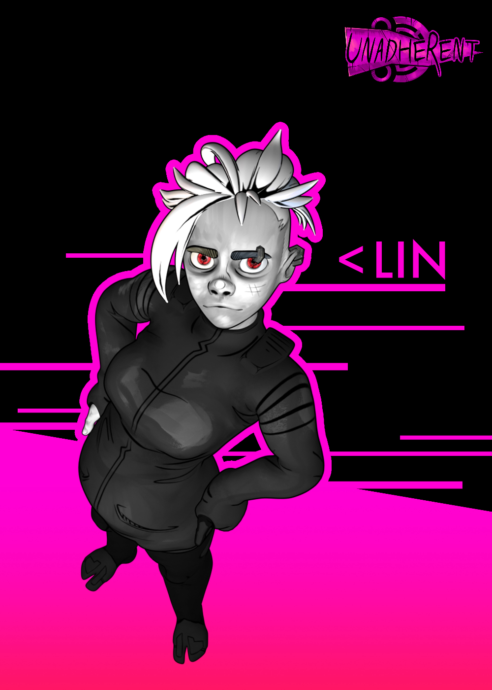

Lin.
This is Aurora Lindell, a soon-to-be protagonist and one of my personal favorite creations. I designed this model of her to imitate my artstyle. I made her part of a versatile visual graphics framework. (Although this was partially an excuse to 3D-model a character in a thesis about graphic design.) Using the framework, I'm able to create create and alter character-centric designs fast, compared to the time they would require drawn by hand.
_Check out my thesis in Finnish_
- 
-

I got to play around with a bunch of technologies while making Lin. I gave her black outlines inspired by the Borderlands franchise, and I hand-painted her textures using a technique similar to what was used in the production of the Arcane TV-series. Getting her expressions right was crucial for getting her personality across. This I ultimately achieved by implementing additional outlined facial features, which automatically show up as parts of her face are moved. I needed her body to deform naturally when moved, which made her skeleton a welcome challenge.
Yes, I know character models' hands are usually palms-down. I needed her radius and ulna to be untwisted for natural forearm deformation, now stop asking!